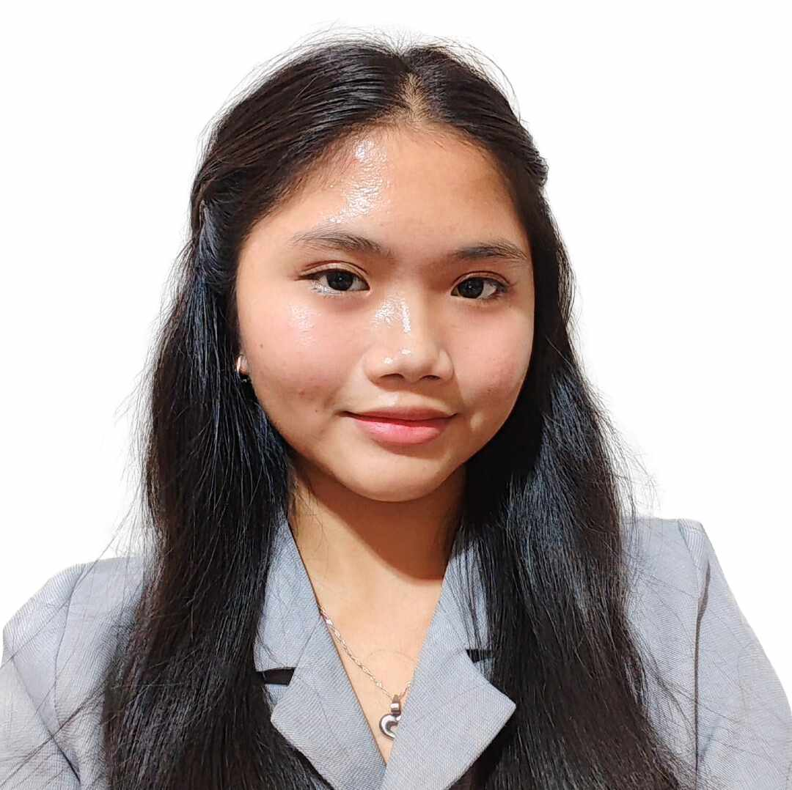

FiliKatha comes from combining the words "Filipino" and "Katha" (which means creation, composition, or story). This is virtual museum dedicated to showcasing the richness and heritage of Filipino arts and culture. This website was created to honor and preserve the creativity, traditions, and artistry of the Philippines through three key collections: Filipino Inventions, Filipino Popular Tales, and Filipino Paintings. Our mission is to bring these cultural treasures into the digital age, making them accessible to audiences who wish to connect with the nation’s history and artistry in meaningful ways.
Filipino arts serve as a window into the nation’s soul, reflecting its diverse history, values, and resilience. Art in the Philippines extends beyond visual appeal; it tells stories of struggle, hope, and identity. From local inventions to the tales passed down orally through generations and the captivating paintings, Filipino arts preserve the essence of our heritage. These expressions help younger generations understand the roots of Filipino culture and inspire them to appreciate, preserve, and further enrich it. Through this digital museum, we aim to highlight the significance of these art forms and encourage others to engage deeply with our cultural legacy.
The creator of this website is Ms. Charmaine Feria, a first-year college student at Polytechnic University of the Philippines, taking Diploma in Computer Engineering Technology from Institute of Technology Department.

My inspiration for this project comes from my personal interest in museums. Visiting museums brings me peace and joy as I admire the diversity of Filipino art. In fact, I visited a museum as part of my 18th birthday celebration. I drew inspiration from traditional museums I have visited, such as the National Museum of the Philippines. My goal was to design a platform that invites viewers to engage with our rich culture and unique stories in a meaningful way. I hope this project demonstrates my passion for both web development and Filipino representation. Thank you for taking the time to journey through this digital tribute to Filipino arts and innovation!